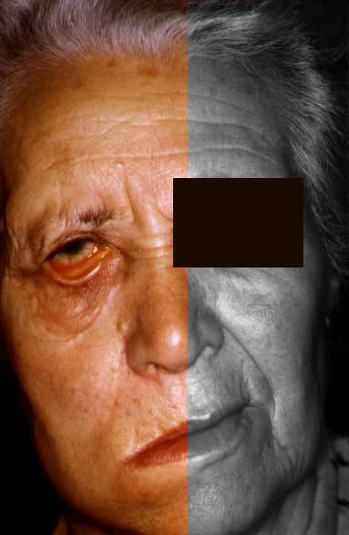

Welcome to Blog
La increíble historia del hombre que creó "el mejor" maniquí para usar el carril rápido de las autopistas en California
2021.03.31 11:03Secciones
Suscribite por $70
Home Último Momento Política Economía Dólar, divisas, acciones y bonos Mercado Inmobiliario Rural Sociedad Ciudades Policiales Opinión Cartas al País Mundo Deportes Fútbol Fútbol Internacional Selección Estadísticas Ascenso Tenis Rugby NBA Hockey Agenda Deportiva Espectáculos TV Cine Series y Películas Música Teatro Cartelera de teatro Cartelera de cine Cultura Revista Ñ Clima Horóscopo Loterías y Quinielas Radio Mitre en Vivo Otros Servicios Clasificados Argenprop Empleos Humor e Ilustraciones Feriados 2021 Tapas de Clarín Ediciones anteriores Gran DT Horóscopo chino Agencias Edición impresa Claringrilla Sudoku Videos Fotogalerías Fama Internacional Estilo Autos Tecnología Viajes Arq Recetas Gourmet Buena Vida Familias Relaciones Astrología Suplementos Revista Viva NYT International Weekly Clarín em portugués Especiales Clarín Docs Newsletters Contactanos Ayuda Suscribite Diálogos para suscriptores TemasMundo
Último Momento Política Economía Sociedad Mundo Deportes Espectáculos Rural Clasificados ClaringrillaIngresar
MI CUENTA MI SUSCRIPCION CERRAR SESIÓN
Suscribite por $70
Mundo
Ciudad de Buenos Aires 20° ST 18.1° Noticias de hoyDólar blue
Vacunación CABA
Elecciones 2021
Coronavirus en Argentina
Devolución del 35% al dólar
Carlos Busqued
Vacuna Covid
Xuxa
Sofía Sarkany
MasterChef Celebrity
Ahora 12
Horóscopo
Euro hoy
Miércoles, 31 de Marzo de 2021Personajes
La increíble historia del hombre que creó “el mejor” maniquí para usar el carril rápido de las autopistas en California
Un conductor usó un muñeco disfrazado hasta con barbijo y arrugas, burlando los controles durante más de un año.
Un maniquí muy realista. Foto: cortesía de Sullinger, oficial de la Patrulla de Caminos de California, vía AP y Los Angeles Daily News
Las más leídasde Mundo
1
Los principales líderes mundiales piden un tratado contra las pandemias que vendrán: “Es solo cuestión de tiempo”
Carta abierta
2
La policía en Estados Unidos esposa, maltrata y amenaza a un nene de cinco años
Violencia policial
3
Israel detectó una nueva variante del coronavirus
El avance de la pandemia
4
Segunda Guerra Mundial: estas son las atrocidades de los nazis que Rusia pide no olvidar
Historia
5
En plena crisis por el coronavirus, Jair Bolsonaro jugó con fuego y se quemó
Análisis
03/03/2021 10:04 Clarín.com Mundo Actualizado al 03/03/2021 10:04La viveza vive en todas partes. Y la creatividad de los conductores para poder usar el carril rápido para vehículos con más de un pasajero en las autopistas en California es ya célebre. Muñecos por niños. Bultos de frazadas en sillitas como bebés... pero el pasado 19 de febrero la policía tuvo que confesar que se encontró con el mejor de todos los trucos : un maniquí disfrazado de anciano y hasta con barbijo.
El maniquí, adornado con cabello gris, arrugas , anteojos, una gorra de béisbol de los Cleveland Indians, un tapabocas y también un par de lentes de sol en el bolsillo de la camisa, estaba sentado en el asiento del acompañante del Toyota Tacoma del conductor, cuando la policía detuvo el auto justamente en un control policial para detectar infractores del carril rápido para varios pasajeros o Carpool lane.
El conductor de California, cuya identidad no trascendió, dijo que había usado un maniquí como pasajero durante al menos un año y medio para acceder a los carriles especiales. Ahora enfrenta una multa de al menos 400 dólares.
Todo empezó cuando el oficial S. Sullinger estaba patrullando la autopista 210 en dirección este en Glendora en busca de infractores en los carriles de viajes compartidos.
El oficial notó que el acompañante del Toyota resultaba sospechoso y además el vehículo tenía vidrios polarizados en el lado del pasajero delantero, algo ilegal.
Cuando el conductor bajó la ventanilla, Sullinger se dio cuenta que el acompañante era falso.
Era el "maniquí más realista", dijo a Los Angeles Daily News el oficial la Patrulla de Caminos de California Rodrigo Jiménez.
"El conductor no dijo mucho", contó Jiménez. "Aparte de eso, estuvo manejando con el maniquí y se salió con la suya durante un año y medio".
La policía de California posteó la foto del maniquí en su página de Facebook porque aquello era de otro nivel y había que compartirlo.
"De lejos, uno de los mejores maniquíes que hemos visto. Para aclarar, nos referimos a este pasajero falso. Al menos estaba siguiendo las pautas de los CDC al usar su máscara facial. Buen intento, conductor. ¡Acá tenés tu multa! "
El "mejor" maniquí
Un hombre usa un muñeco y burla a la policía en California
El conductor fue citado por la infracción de Carpool pero el maniquí no fue confiscado. No hay castigo adicional por intentar engañar a los oficiales colocando un maniquí en el asiento del pasajero,
A veces, los conductores usan un maniquí con el asiento hacia atrás o los pies del muñeco sobre el tablero para que parezca que el pasajero está durmiendo, dijo Jiménez.
Este oficial, quien ha trabajado como oficial de Caminos durante 13 años, dijo que también ha visto a personas usar mantas en un asiento de bebé o incluso una muñeca pequeña para que parezca que hay un niño en el vehículo.
Pero este caso fue el ejemplo más realista que vieron Jiménez o Sullinger.
"Pensé que lo había visto todo, pero supongo que no", dijo Jiménez. "Esto es algo que sale directamente de Disneyland ".
Associated Press
Mirá también Mirá tambiénBiden promete una vacuna suficiente “para todos los estadounidenses adultos” para finales de mayo
Mirá también Mirá también¿Cuándo abrir las escuelas en Estados Unidos? Otra encrucijada para Joe Biden
TEMAS QUE APARECEN EN ESTA NOTA
California Estados UnidosLo más leído de Política
Proyecto de ley
Mendoza: preparan un insólito plebiscito para definir si la provincia deja de ser parte de Argentina
MendozaSigue el escándalo
Beatriz Sarlo cruzó cartas documento con Axel Kicillof e ironizó: “Intercambiamos misivas de amor vía judicial”
Últimas NoticiasEscenario
Amado Boudou no volverá nunca más a la cárcel
Amado BoudouReunión oficial
El Gobierno le propuso a la oposición un acuerdo para postergar las elecciones
Wado De PedroNuevas restricciones
Segunda ola de coronavirus: preocupan las reuniones sociales y el Gobierno analiza medidas para después de Semana Santa
CoronavirusPreocupación
Segunda ola de coronavirus: la Provincia suspende actividades entre las 2 y las 6 de la mañana y limita las reuniones
Últimas NoticiasLo más leído de Espectáculos
Confusas declaraciones
Xuxa y un mensaje para concientizar sobre el Covid. “Yo maté a mi madre”
XuxaConfesiones
Primero se definió bisexual, luego homosexual, y ahora Demi Lovato dice ser pansexual
Demi LovatoSecretos de una estrella
Sharon Stone se confiesa: la muerte desde cerca, un abuelo abusador y la intimidad inventada por el público
Sharon StoneRetrato
Quién está detrás de César Lazcano, el villano de ¿Quién mató a Sara?
Series Y PelículasSu palabra
Woody Allen habló de las acusaciones de abuso a su hija Dylan Farrow
Woody AllenRevelaciones
Michael Douglas: con problemas de memoria a corto plazo, culpa de la marihuana
Michael DouglasLo más leído de Deportes
A favor de los derechos humanos
Las selecciones europeas se unen con un fuerte mensaje: no quieren jugar el Mundial en Catar
Mundial Qatar 2022Festejo argentino
Adolfo Cambiaso hizo historia en la Triple Corona de Estados Unidos junto a su hijo Poroto
PoloSe va del City
Ronald Koeman le baja el pulgar al arribo del Kun Agüero al Barcelona
Sergio Kun AgüeroInseguridad vial
Tres de Febrero: un jugador de Chacarita quedó en coma tras ser atropellado por un auto robado
InseguridadCierra un ciclo
El Kun Agüero se va del Manchester City después de 10 años y el club anunció que le construirá una estatua
Sergio Kun AgüeroEn Francia
Karim Benzema ya tiene fecha para el juicio por chantaje: cuál fue su reacción y la posible pena
Karim BenzemaLo más leído de Sociedad
19 días sin rastros
Hallaron la última foto de Tehuel de la Torre: estaba junto a los dos detenidos por su desaparición
Personas DesaparecidasSentencia
Un padre no pagó la cuota alimentaria de sus hijos y ahora deberá abonar $ 800 mil
Río NegroLa cifras de la pandemia
Otra cifra que enciende las alertas: confirman 10.154 contagios de coronavirus en sólo 19 horas
Coronavirus En ArgentinaGuía de ayuda
Cómo sacar el porcentaje de un número
MatemáticaViajó desde Bahía Blanca
Una ex modelo de 82 años desafía a Gildo Insfrán y reparte comida entre los wichis de Formosa
Bahía BlancaLa rebautizaron
La vacuna de AstraZeneca tiene nuevo nombre
CoronavirusLo más leído de Mundo
Violencia policial
La policía en Estados Unidos esposa, maltrata y amenaza a un nene de cinco años
Estados UnidosAnálisis
En plena crisis por el coronavirus, Jair Bolsonaro jugó con fuego y se quemó
Jair BolsonaroCarta abierta
Los principales líderes mundiales piden un tratado contra las pandemias que vendrán: “Es solo cuestión de tiempo”
CoronavirusEl avance de la pandemia
Israel detectó una nueva variante del coronavirus
CoronavirusEn foco
Crisis institucional, purga castrense: ¿Qué está sucediendo en Brasil?
Fuerzas ArmadasEfectos de la pandemia
Italia pierde en un año la población equivalente a toda Florencia
CoronavirusLo más leído de Policiales
Polémica
Video: escándalo por una enfermera esposada por una policía en una guardia de Longchamps
Últimas NoticiasInseguridad en el GBA
Atacan a tiros la comisaría de Castelar donde murió el ladrón que atropelló y mató a una joven
InseguridadTres días de angustia
“No sabía nada”, la reacción de Carlos Savanz cuando lo encontraron con la nena
Parque AvellanedaMuerte en el Sur
El audio que anticipó un crimen: “¿Que yo le hago algo a Juan? Sí, ¿sabés qué? Estoy re loca”
Río GallegosViolencia en el GBA
“Ahora vuelvo”, el adiós para siempre de otra muerte absurda por la inseguridad
InseguridadBerazategui
Lo apuñaló en el cuello porque lo denunció por ladrón: “Tyson me cortó, me cortó a traición”
InseguridadPiedras 1743. C.A.B.A, Argentina
Editor Responsable: Ricardo Kirschbaum
Registro de Propiedad Intelectual: 4347221
Edición Nº: 9127
31 de Marzo de 2021
Suscribite por $70
AREA DIGITAL
Diario Olé + Gran Dt + Argenprop + Guía Clarín + Clasificados + Receptoria Online + Colecciones Clarín + ElleGRUPO CLARIN
Grupo Clarín + Noticias Clarín + TN + El Trece TV + Mitre + La 100 + Ciudad + Cienradios + TyCSports + La Voz del Interior + Los Andes + ViaPais + RumbosPUBLICIDAD
ANÚNCIESE CON NOSOTROS Términos y Condiciones Política de Protección de Datos Personales Normas de confidencialidad y privacidad Mapa del sitio Contáctenos Ayuda ArchivoRegistro Propiedad Intelectual: 4347221. Propietario Arte Gráfico Editorial Argentino S.A. © 1996-2021 Clarín.com - Clarín Digital - Todos los derechos reservados.
Información fiscal
